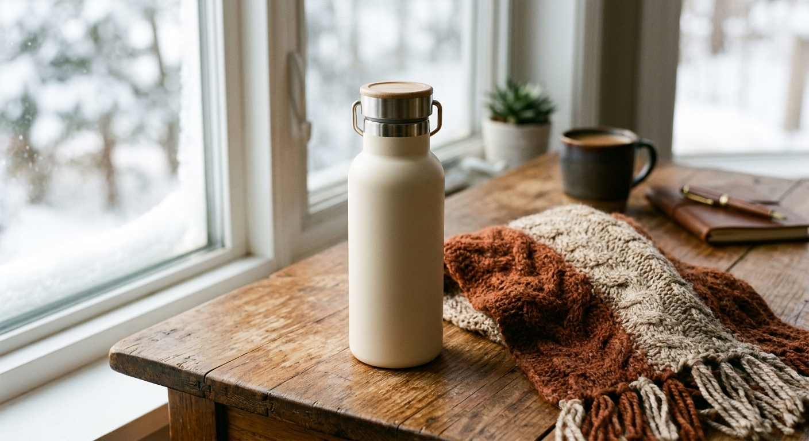

A vacuum-insulated bottle built in Japan's current Showa retro style - a genuine design revival, not a costume version of the look, keeping drinks hot for hours through cold winter days.

Vacuum insulation keeps drinks hot well past 6 hours.
Showa retro styling is a current, deliberate trend in Japan, not a one-off novelty.
Small enough for a bag or desk, not just a kitchen shelf.
Works for both winter hot drinks and summer cold ones.
Across Japan, products styled after Showa and Heisei-era design are seeing a genuine resurgence - not as kitsch, but as a preferred aesthetic for younger buyers rediscovering an older look.
A vacuum bottle built in that style brings the trend into something genuinely useful for everyday winter use, rather than keeping it as a purely decorative object.
Hot tea or coffee that stays hot the whole trip.
A warm drink on hand without reheating.
A genuinely current trend piece, not a generic bottle.
Over 6 hours above 124°F per the manufacturer's listing.
Check the current listing for care instructions.
Check the current listing for the full range.
A Showa retro-style vacuum insulated bottle - see current pricing and availability on Amazon.
Check Price on Amazon →